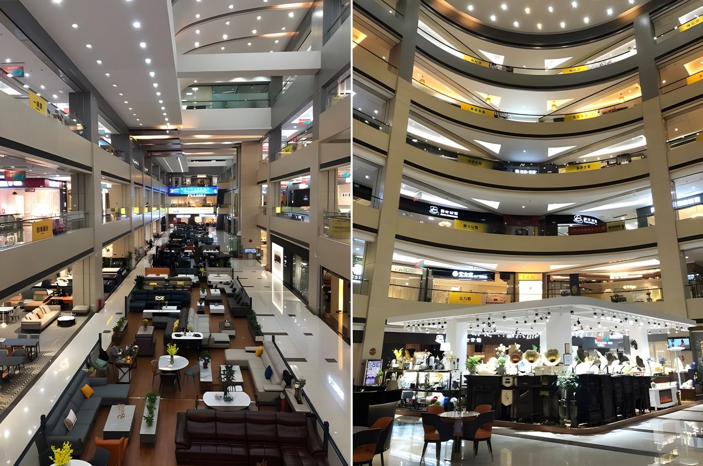
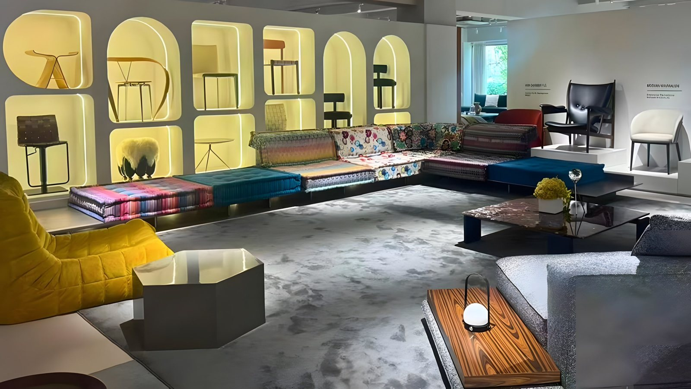
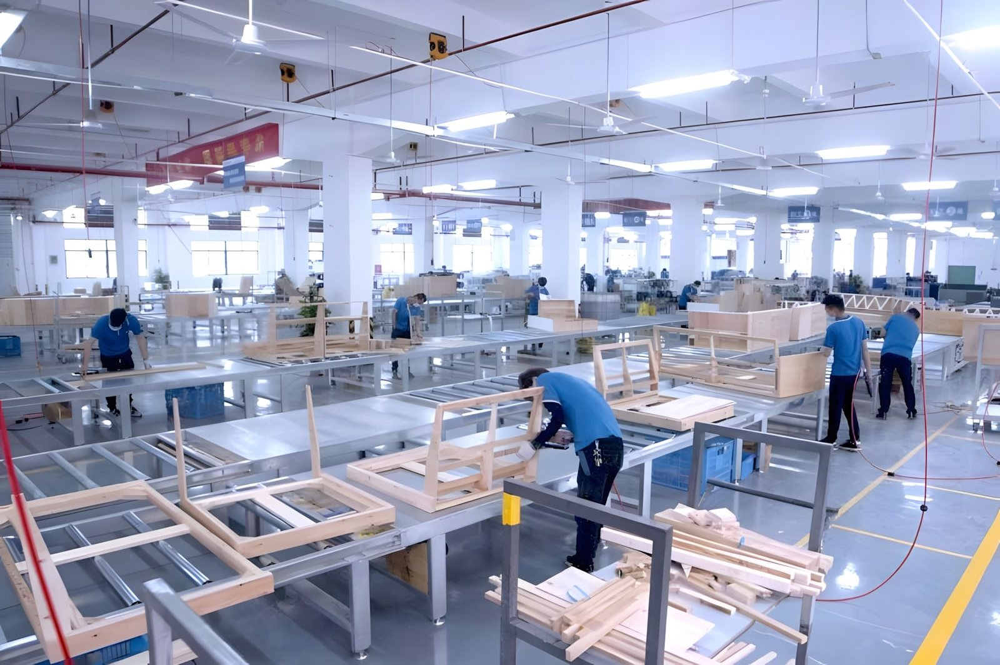
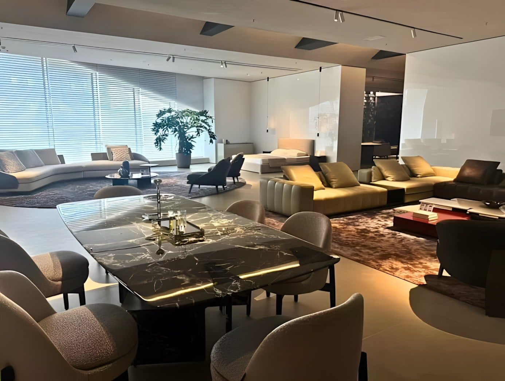

Why Foshan?
Foshan is having a moment. Here’s the story behind it.
China’s Furniture Capital
Foshan isn’t just a place that makes furniture. It’s a place where the furniture business has been transformed—and where homeowners can now shop factory-direct in ways they couldn’t before.
For decades, much of Foshan’s industry was built around B2B and trade buyers. That started to shift—and the pace picked up after 2020.
From B2B to Direct-to-Consumer
The shift toward direct-to-consumer (DTC) sales began before the COVID pandemic and exploded shortly after. Chinese consumers emerged from lockdown ready to spend on their homes, just as social media commerce and factory-direct e-commerce took off. Seemingly overnight, Foshan became a household name for Chinese homeowners furnishing an entire home over a weekend trip.
The impact was real. Selling to demanding homeowners pushed manufacturers to raise their game—better quality and service, sharper designer-inspired styles, and standards aimed at matching European designer brands.
International homeowners soon took notice. Today, more buyers from overseas are traveling to Foshan—to walk showrooms, compare collections, and buy factory-direct.
A Remarkable Concentration of Furniture

Walk the market and the scale hits you fast. The square footage of high-end designer showrooms here is unmatched anywhere in the world.
Foshan was already home to the Louvre International Furniture Mall, China’s largest luxury furniture mall. The direct-to-consumer boom further encouraged manufacturers to build massive, multi-storey individual showrooms of their own—think IKEA size—showcasing their entire collections under one roof. Today, hundreds of standalone factory showrooms are spread across Foshan, offering a compelling alternative to furniture malls, especially for whole-home projects.
From sofas and dining sets to beds, wardrobes, outdoor furniture, and more, buyers can find furniture for every room of the home.
Designer-Inspired Furniture, Factory-Direct

Most homeowners typically buy designer furniture through local luxury retailers. This means high prices, limited options. Foshan today lets consumers buy direct from factories—at meaningfully lower prices, even after shipping, duties, taxes, and delivery.
But price is only part of the appeal. The right factories offer impressive quality and a broad range of styles and products. High-end Foshan factories also build to order, allowing buyers to customize materials, upholstery, colors, and more—at minimal or no added costs.
Foshan’s manufacturers are aggressive in new product development. The best ones set their annual release cycle around the Milan International Furniture Fair: they watch for emerging designs, order samples, and develop their own designer-inspired interpretations. The newest collections are available before the year is out.
Not Every Foshan Factory Is Equal

When buying in Foshan, finding a reputable factory matters—a lot. It’s also not always easy: this city has tens of thousands of factories and suppliers.
Not every showroom belongs to a factory. Some are retailers or aggregators sourcing from multiple manufacturers. Others are traditional factories focused primarily on wholesale customers. Even factories that accept smaller orders may subcontract production.
The key is knowing what kind of supplier you’re talking to, whether they’re set up for direct-to-consumer sales, and what other buyers say about them. Compare options, ask good questions, and do your due diligence—boring advice, but it saves real money.
How InsideFoshan Helps

I built InsideFoshan to make exploring this fascinating market easier—curated factory catalogs and showroom photographs, all in one place, without fuss. Showroom addresses are on the homepage.
Enjoy. Questions along the way? Feel free to reach out. Good luck on your Foshan furniture journey.